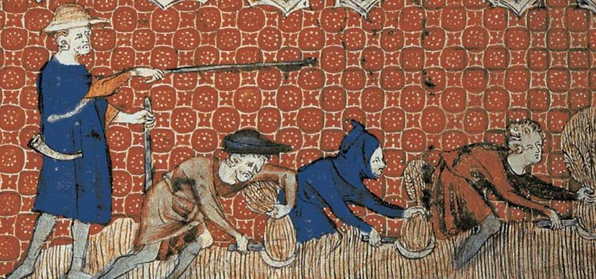

Feudalism, what is it, and why?
Feudalism is a combination of legal and military customs, and as people could no longer look at the empire for protection, and Carolingian Rulers constantly fought each other, they turned to nobles. Nobles became a necessity to survive. Without the nobles protection, survival rates became slim. Feudalism is now in full swing.
Anything in Return?
Well, it was often rare when a Noble/Lord would give his services for free, unless he wanted to trick somebody. Most of the time, the other person would act like a "slave" for the Noble/Lord, farming crops, making weapons in turn for money, whatever it took.
